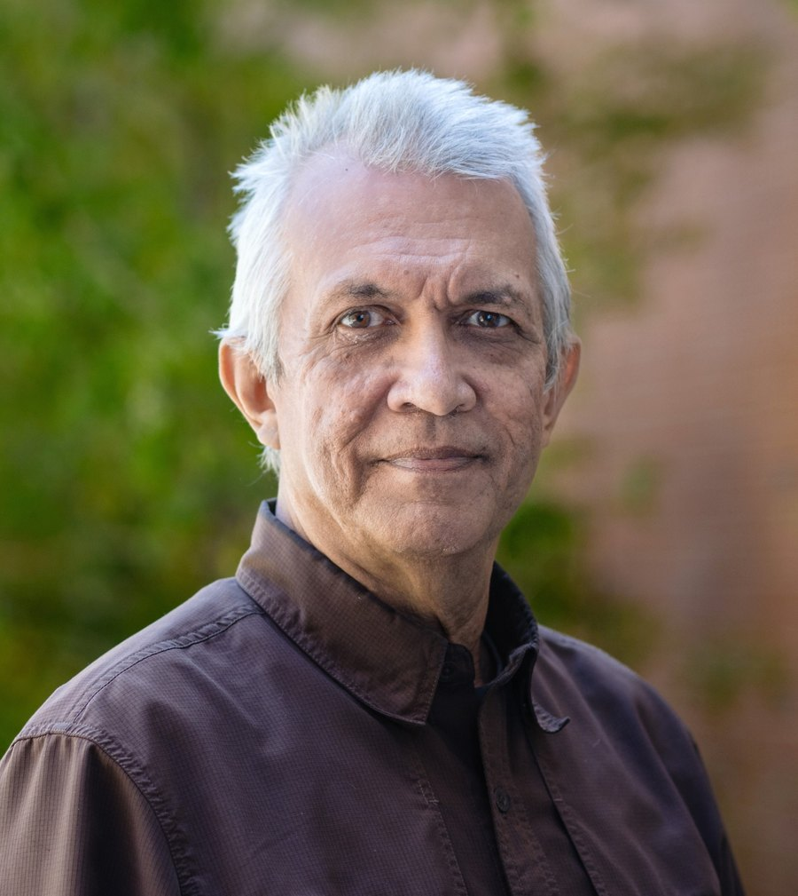

Monday & Tuesday mornings
Models as Support for Understanding, Reasoning & Discovery
Models as instruments of understanding rather than prediction machines: diagnostics, misspecification, and bridging process-based and learned representations.
The theme
Why this workshop, and what we hope comes out of it.
Motivation
Recent advances in artificial intelligence are transforming the geosciences at an unprecedented rate. These developments are raising fundamental questions about the critical roles of reasoning, process understanding, counterfactual analysis and physical consistency in geo-scientific investigation and model development.
Such concerns become even more pressing given the clear observational evidence that geo-scientific systems can no longer be treated as stationary.
Focus
This workshop will examine how reasoning-based approaches — rooted in physics, domain understanding (including hydrology and atmospheric science), information theory and systems theory — can be suitably integrated with modern AI methods to advance geoscientific modeling.
It aims to initiate a dialogue rather than produce a proceedings. The schedule allots substantial time to moderated discussion and to posters, and Tuesday evening is set aside for planning what comes after.
Sessions
Monday & Tuesday mornings
Models as instruments of understanding rather than prediction machines: diagnostics, misspecification, and bridging process-based and learned representations.
Monday afternoon
What systems theory taught hydrology about learning from data, recounted by the people who built that record.
Tuesday afternoon
Equation discovery, new architectures, latent representation, causality and agentic methods for model development.
Celebration
The workshop celebrates the career and scientific contributions of Professor Hoshin Gupta, whose work has emphasized the importance of reasoning, diagnostics and hypothesis testing in hydrologic science.
Hoshin will be 70 years of age on May 3, 2027, and will formally retire in the spring of 2027, although he plans to remain engaged and to maintain Emeritus status. The workshop’s theme is drawn directly from the questions he has spent a career pressing on the field.

Next
Two full days of invited presentations, four poster sessions and four moderated discussion periods.
Hosted by
Held at